¿Quién es Sabrina Carpenter?
Sabrina Carpenter es una cantante, compositora y actriz estadounidense que se ha consolidado como una de las figuras más importantes del pop actual. Tras iniciar su carrera en Disney Channel con la serie Girl Meets World, logró una exitosa transición a la música madura con álbumes como Emails I Can’t Send y el fenómeno global Short n' Sweet. Reconocida por su estilo estético retro-coquette, su voz dulce y sus letras cargadas de ingenio y humor, Carpenter ha dominado las listas de éxitos con hits como "Espresso" y "Please Please Please", ganando múltiples premios Grammy y posicionándose como un referente de la moda y la cultura pop contemporánea.
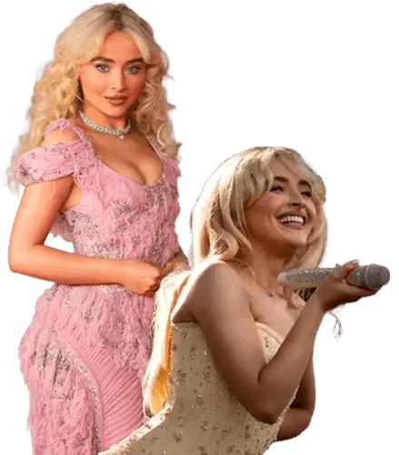
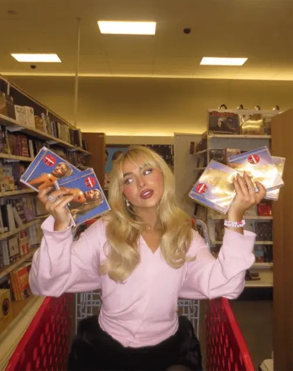
Cantante
Su camino en la música comenzó de manera paralela a su faceta actoral, firmando con Hollywood Records en 2014 y lanzando su primer EP, seguido por su álbum debut "Eyes Wide Open".
A lo largo de los años, su estilo fue evolucionando hasta que firmó con Island Records en 2021, marcando una nueva etapa con lanzamientos muy exitosos como "Emails I Can't Send" y "Short n' Sweet".
Además, su popularidad creció enormemente al ser acto de apertura de la masiva gira "The Eras Tour" de Taylor Swift.
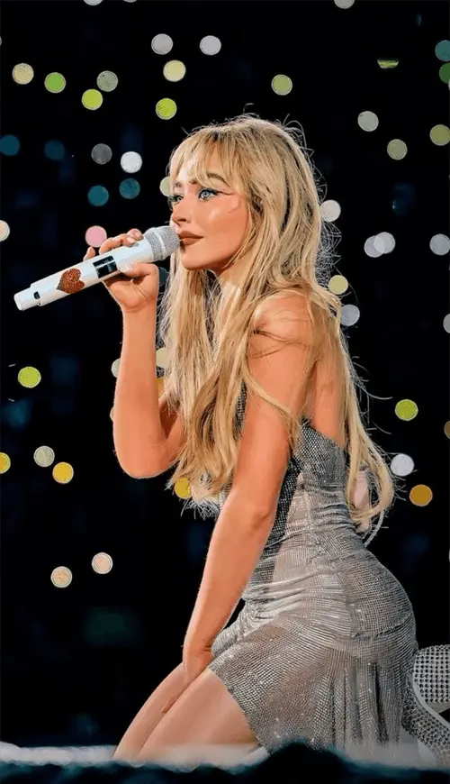
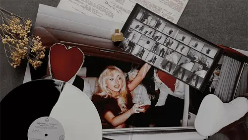
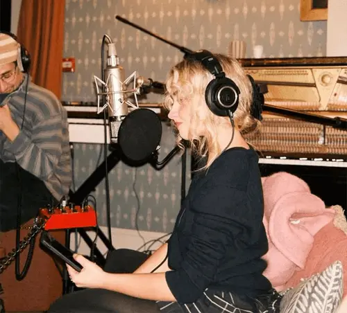
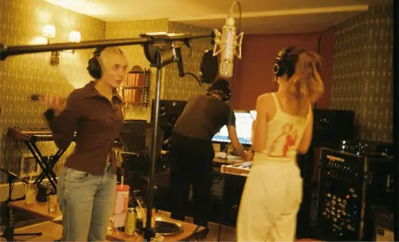
Compositora
Sabrina Carpenter está muy involucrada en la composición de sus canciones, buscando reflejar sus experiencias personales y una madurez emocional en cada letra.
A través de sus discos, se destaca por crear melodías pop pegajosas combinadas con una narrativa honesta y llena de ingenio.
Para lograr esto, suele colaborar estrechamente con productores y otros compositores para pulir los detalles de cada canción y darle un sello único.
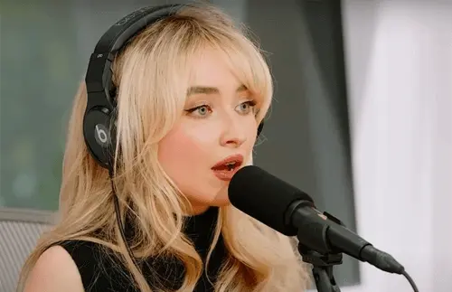
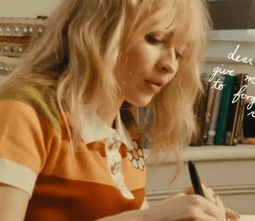
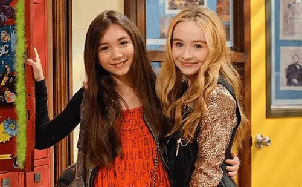
Actriz
Sabrina Carpenter empezó muy joven en el mundo de la actuación, haciendo pequeñas apariciones en programas de televisión como "La Ley y el Orden: Unidad de Víctimas Especiales" y participando en producciones locales.
Su gran oportunidad llegó cuando fue seleccionada para interpretar a Maya Hart en la exitosa serie de Disney Channel, "El mundo de Riley", lo que le dio muchísima visibilidad y la convirtió en un rostro muy conocido entre el público joven.
Desde entonces, ha seguido ampliando su repertorio actoral participando en varias películas, incluyendo proyectos para plataformas de streaming como la trilogía de "A mi altura", además de protagonizar y producir la película "Work It".
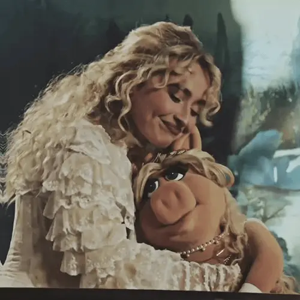
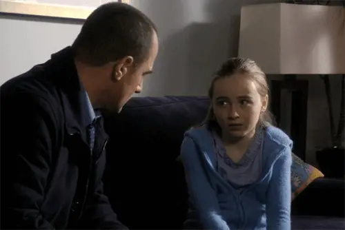
Estilo musical
Como todos sabemos Sabrina coquetea con muchos estilos, como el Teen pop, Dance-pop, Synth-pop, R&B, Folk-pop y Country-pop. Pero el género con el que se la engloba es el Pop, porque su música prioriza la estructura melódica pegadiza, la producción pulida y letras que conectan con las experiencias cotidianas y las relaciones. A continuación hablaremos un poco sobre la historia de este estilo musical.
La historia de este género, cuyo término proviene de "popular music", comenzó a trazarse en los años 50 en Estados Unidos y el Reino Unido como una alternativa más suave y comercial al Rock and Roll, enfocándose en canciones cortas de amor para el público joven. Durante los años 60, la "Invasión Británica" liderada por grupos como The Beatles terminó de definir la estructura clásica de estrofa-estribillo, demostrando que el pop podía ser artísticamente ambicioso.
Posteriormente, entre los años 70 y 80, el género se volcó hacia las pistas de baile con la llegada de la música Disco y los sintetizadores, encumbrando a figuras como Michael Jackson y Madonna, quienes transformaron la música en un espectáculo visual total. Para la década de los 90 y los 2000, surgió el fenómeno del pop adolescente y las boybands, un modelo que influyó directamente en las academias de talentos de donde surgieron estrellas como la propia Sabrina. Hoy en día, en la era digital, el pop funciona como un "género esponja" que absorbe ritmos como el Trap, el EDM y el K-Pop, destacando por su producción minimalista y su enorme capacidad de viralización.